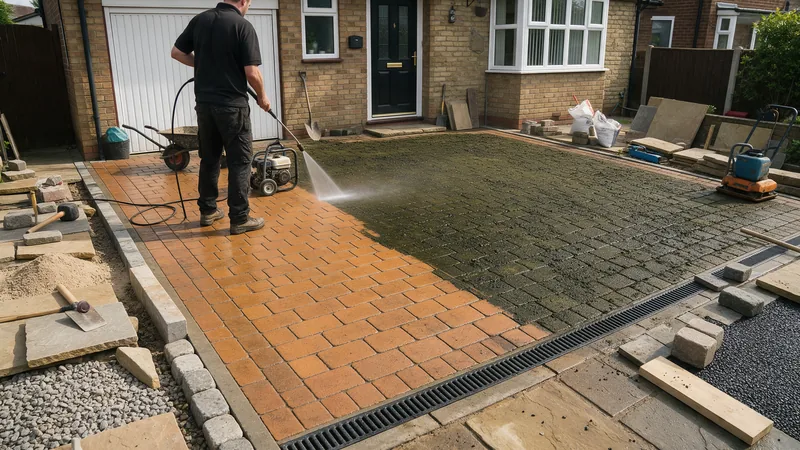
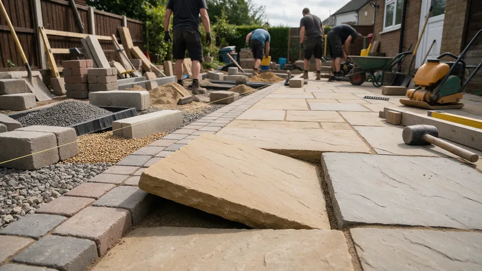

Most tired drives are not finished
A drive that has gone green and dark, with a dip by the garage and sand missing from the joints, looks a lot worse than it is. Underneath the grime the blocks are usually sound, because concrete blocks do not wear out in fifteen years of a family car. What has gone is the joint sand, the surface film and in one or two places the level.
So the first thing we do is say which of the two it is. A wash, a re-sand and a patch lifted and relaid, or a drive that has genuinely failed and wants rebuilding. We would rather do the small job, because the firm that lifted a square metre honestly is the firm you ring when you do want the lot doing.
Washing, and doing it without damage
A rotary head on a pressure washer, kept moving, at a sensible distance. What ruins drives is a pencil jet held in one place, which blasts the sand out of the joints, cuts a line into the block face and leaves stripes you can see from the road for years. Softer is slower and better.
Then the part everybody skips: re-sanding. Washing takes the joint sand out whether you meant it to or not, and the joints are what holds a block drive together. Kiln dried sand brushed in, vibrated down, brushed again. A washed drive that has not been re-sanded will start moving within a year.
Lifting and relaying a sunken patch
This is the quiet advantage of block paving over every other surface. The blocks come up, the dip in the laying course gets found and put right, often with a bit more sub base where something soft has been, and the same blocks go back down. No colour mismatch, no patch, nothing to show it happened.
Flags are a similar story. A flag that rocks is nearly always a flag laid on dabs or on a bed that has washed out. Lift it, clean the back, lay it on a full bed and point it in, and it is dead solid again.
Weeds, moss and sealing
Weeds in a block drive grow in the joint from seeds landing on top, not up through the sub base, so the answer is keeping the joints full rather than anything dramatic. Moss is the same conversation: it holds on where the sand is low and the drive stays damp.
Sealing is optional. It holds the joint sand, slows oil marks and makes the next wash easier. It also wants a clean, properly dry drive and doing again every few years, and a seal put on damp goes cloudy and looks worse than none. If somebody offers to wash and seal your drive in the same day in November, that is the moment to ask a few questions.

Generated photoGenerated for this demo. Not a photograph of a real job.

Generated photoA tipped flag is a trip waiting to happen. Generated for this demo.
On the job
How this one usually goes.
- We look before we washWhich patches have moved, where the sand has gone, where the water sits and whether anything is actually broken rather than dirty.
- Any repairs firstBlocks up, the dip in the laying course put right, extra sub base where something has been soft, and the same blocks back down to the line.
- Washed properlyRotary head, kept moving, at a distance that cleans without cutting the block face or stripping the joints into stripes.
- Re-sanded and vibratedKiln dried sand brushed into every joint, the drive vibrated down, then brushed and topped up again. This is the step that makes the wash last.
- Sealed only if it suitsOn a clean, dry drive, if you want it, and after a conversation about when it would need doing again. Never on the same day as the wash.
A sample running order for this demo. Yours depends on the house and what comes out of the ground.
Questions
Asked about this job.
Will pressure washing damage my blocks?
Done carelessly, yes. A pencil jet held close will cut the surface off a block and etch lines into it, and that does not come back. A rotary head kept moving at a sensible distance cleans the same drive without marking it. The other damage is invisible on the day: all the joint sand gone, which is why re-sanding is part of the job rather than an extra.
Why do weeds keep coming back in my joints?
Because the joints are not full. Seeds land on top of a drive, settle in a low joint where damp collects, and grow there. Nothing is coming up from underneath. Keep the joints sanded and brushed and the problem gets small. Spraying an empty joint just kills what is in it this month.
Can you fix one sunken patch rather than the whole drive?
Yes, and that is most of what this part of the work is. The blocks lift, the dip underneath gets found and put right, and the same blocks go back. The only time we would advise against it is when the same fault is showing in several places, because then it is the base rather than a patch.
My flags rock when I stand on them. Is that serious?
It is worth sorting, mostly because a rocking flag becomes a tipping flag and then a trip. It is nearly always a flag laid on five dabs of mortar instead of a full bed, or a bed that has washed away. Lifting and relaying it properly is a short job. There is more on making a trip hazard safe on the urgent help page.
General trade knowledge written for this demo, not advice on your property.
Our work
Sample jobs like this.
 Generated photoSunken patch lifted and relaidWesthoughton Sample
Generated photoSunken patch lifted and relaidWesthoughton Sample Generated photoSandstone off the back doorHorwich Sample
Generated photoSandstone off the back doorHorwich SampleMade up samples with generated pictures. Tap one for the detail.
Also
The other things we do.
Block paving driveways
Dug out properly, a sub base that carries a car, and blocks laid to a line. The bit you see is the last day of the job and the smallest part of it.
More →Tarmac and resin driveways
Tarmac where you want one quiet surface and a good edge. Resin bound where you want gravel that stays where you put it and lets water through.
More →Patios
Sandstone, porcelain or concrete flags on a full bed, falling away from the house, with the joints and the step down sorted before anybody sits on it.
More →Dropped kerbs, through the council
The crossing from the road on to your drive. The council decides whether you can have one and who may build it, so that part comes first.
More →Drainage for drives
Channel drains, soakaways, falls and permeable surfaces. Where the water goes is the question that decides most of a driveway job.
More →Shall we come and look at the levels?
Tell us what is there now and your postcode. If something has sunk and somebody could trip on it, use the urgent line instead.